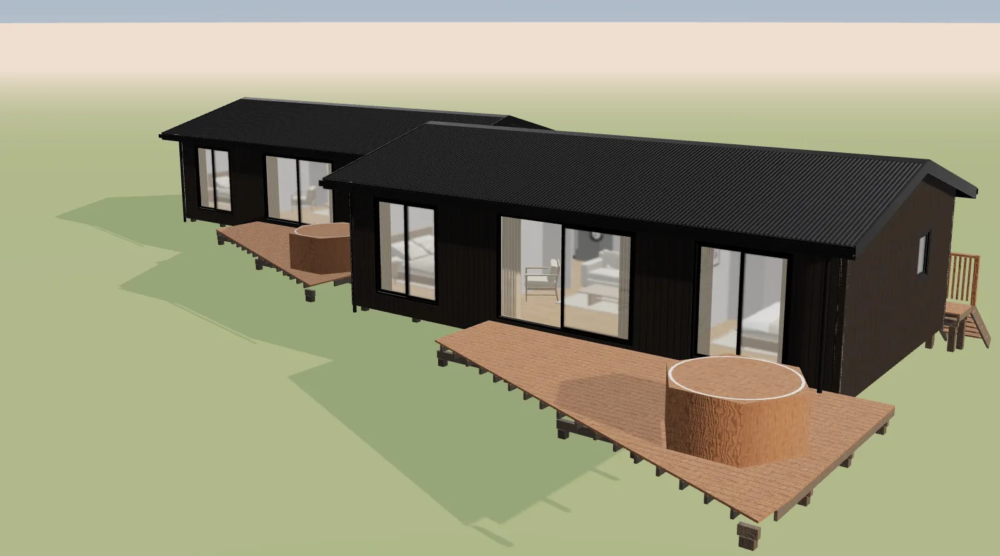

Kate Hudson, for the
Director, AI Special Projects role
November 2026
Six places AI pays at ArchiPro.
06ideas, each working on this page
Two homes, rendered. Not a photograph.
Every product in a project, readable by the assistants people now research with, specified by architects, drawn into the set and placed on the house they're building. Six ideas, each one working here. Ask the studio guide and it will drive the page for you.
- Live Plan Studio drawing the set, the 16A model and the studio guide
- Sample suppliers, products, practice, house and queue
- Proposed the feed licence and every integration
ArchiPro's own numbers say research has moved.
The studio guide, furnishing a room
Ask for a room. Watch it fill.
Scroll to furnish the room
Sample products
A render, not a photograph. The products are samples.
Studio guide
Demonstration · scripted
- Thermally broken aluminium joinery, matt black
- Ground and polished concrete floor
- Modular linen sofa
- Round oak coffee table and rug
- Oak lounge chair
- Oak dining table and chairs
- White dome pendants
the catalogue, found quoted
01
The catalogue AI assistants quote.
When someone asks ChatGPT or Claude for a product, the answer should come from ArchiPro, link to ArchiPro and send the enquiry through ArchiPro. That needs the catalogue published as licensed, structured data, not just pages.
Ask as a homeowner or an architect would
What we'd measure
- Sessions that arrive from an AI answer
- Enquiries from those sessions, on platform and on suppliers' sites
- Licensed feed calls, by partner
the specification, copied written
02
A specification assistant for architects.
Set the brief once. The assistant shortlists from the catalogue, shows the trade-offs side by side and writes the specification lines. It prepares the Building Code review for the designer; it never says a product complies.
the spec, described drawn
A101
The ground floor plan from chapter 03, drawn live from the model.
the drawing set, described drawn
03
From a brief to a printed set, on this page.
This is assembl Plan Studio running here. One model of a fictional house drives the 3D, four A3 sheets, an advisory Building Code pre-check and the IFC and DXF files. The products in your specification are named on the elevations. Change the brief and every sheet redraws.
the home, imagined placed
04
A homeowner companion, on their real site.
From a brief to a shortlist to products on the house itself, in the real sun. This is the Plan to 4D twin of 16A, two timber homes from Kate's own resource-consent drawings. Pick a product and the house rebuilds with it.

Still from the twin. The live model is about 3 MB.
Sun at the site
the member, chased joined
05
From trial to paying member, self-serve.
A practice names its website. An agent reads only that site, drafts the profile, matches products in its projects to the catalogue and suggests a plan. The practice owner checks it and presses publish. Nothing goes live before that.
the work, sent approved
06
Agent teams across three markets.
Small teams in Auckland, Sydney and Los Angeles, with agents doing the preparation overnight. Each card is work an agent drafted. Nothing leaves ArchiPro until the named person approves it.
Audit log 0
the house, described drawn
07
A section through a house in the bush. Point at it, or touch it, to see the house underneath.
The same way of working, running in assembl's architecture studio.
The studio is a working team of 33 specialist agents for architecture, each with a named human reviewer and written limits. Its Building Code register is metadata only: it prepares the reviewer and can't claim compliance. These are its own records and measured runs.
How I'd start, in the first ninety days.
- 01Weeks 1–3
Pick one, set the baseline.
Choose the idea with the clearest number behind it, likely the catalogue feed. Agree the measure, the window and where the data comes from before building anything.
- 02Weeks 4–8
Ship it to a small group.
A real feed, a real assistant integration, a few suppliers who opt in. Every change on a branch, tested in a browser, previewed and approved before it goes live.
- 03Weeks 9–12
Read the evidence, then widen.
Show what moved, what it cost and what went wrong. Expand only if it clears the bar we set in week one.
Kate Hudson, for Director, AI Special Projects. I founded assembl to assemble the agent world for New Zealand business, I build with AI agents every day, and every idea on this page runs.